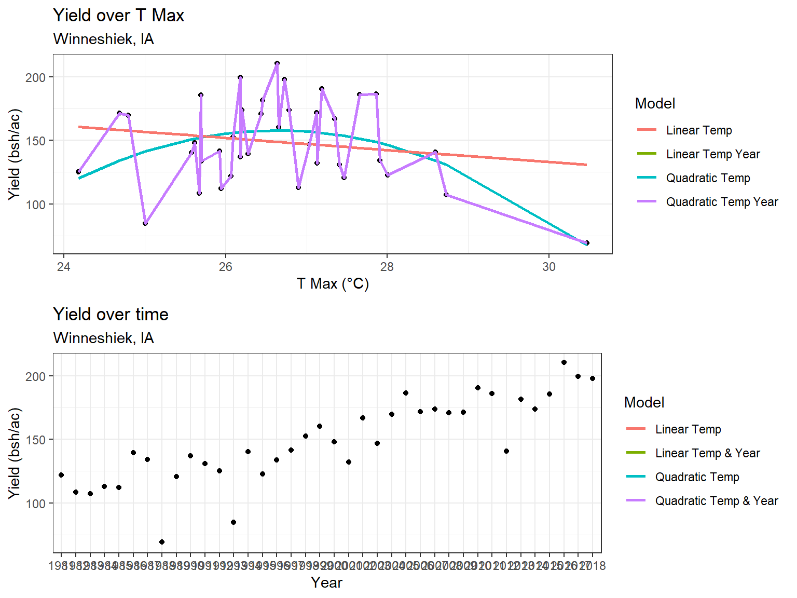

Chapter 6 Weather and Corn Yield Regressions
6.1 Setup
6.1.1 Load the PRISM daily maximum temperatures
# daily max temperature
# dimensions: counties x days x years
prism <- readMat("data/corn/prismiowa.mat")
# look at county #1
t_1981_c1 <- prism$tmaxdaily.iowa[1,,1]
t_1981_c1[366]## [1] NaNplot(1:366, t_1981_c1, type = "l")ggplot() +
geom_line(mapping = aes(x=1:366, y = t_1981_c1)) +
theme_bw() +
xlab("day of year") +
ylab("daily maximum temperature (°C)") +
ggtitle("Daily Maximum Temperature, Iowa County #1")## Warning: Removed 1 row(s) containing missing values (geom_path).# assign dimension names to tmax matrix
dimnames(prism$tmaxdaily.iowa) <- list(prism$COUNTYFP, 1:366, prism$years)
# converted 3d matrix into a data frame
tmaxdf <- as.data.frame.table(prism$tmaxdaily.iowa)
# relabel the columns
colnames(tmaxdf) <- c("countyfp","doy","year","tmax")
tmaxdf <- tibble(tmaxdf)6.1.2 Temperature trends
6.1.2.1 Summer temperature trends: Winneshiek County
tmaxdf$doy <- as.numeric(tmaxdf$doy)
tmaxdf$year <- as.numeric(as.character(tmaxdf$year))
winneSummer <- tmaxdf %>%
filter(countyfp==191 & doy >= 152 & doy <= 243) %>%
group_by(year) %>%
summarize(meanTmax = mean(tmax))
ggplot(winneSummer, mapping = aes(x = year, y = meanTmax)) +
geom_point() +
theme_bw() +
labs(x = "year", y = "Tmax (°C)") +
geom_smooth(method = lm)## `geom_smooth()` using formula 'y ~ x'lm_summerTmax <- lm(meanTmax ~ year, winneSummer)
summary(lm_summerTmax)##
## Call:
## lm(formula = meanTmax ~ year, data = winneSummer)
##
## Residuals:
## Min 1Q Median 3Q Max
## -2.5189 -0.7867 -0.0341 0.6859 3.7415
##
## Coefficients:
## Estimate Std. Error t value Pr(>|t|)
## (Intercept) 41.57670 36.44848 1.141 0.262
## year -0.00747 0.01823 -0.410 0.684
##
## Residual standard error: 1.232 on 36 degrees of freedom
## Multiple R-squared: 0.004644, Adjusted R-squared: -0.02301
## F-statistic: 0.168 on 1 and 36 DF, p-value: 0.68446.1.2.2 Winter Temperatures - Winneshiek County
winneWinter <- tmaxdf %>%
filter(countyfp==191 & (doy <= 59 | doy >= 335) & !is.na(tmax)) %>%
group_by(year) %>%
summarize(meanTmax = mean(tmax))
ggplot(winneWinter, mapping = aes(x = year, y = meanTmax)) +
geom_point() +
theme_bw() +
labs(x = "year", y = "Tmax (°C)") +
geom_smooth(method = lm)## `geom_smooth()` using formula 'y ~ x'
lm_winterTmax <- lm(meanTmax ~ year, winneWinter)
summary(lm_winterTmax)##
## Call:
## lm(formula = meanTmax ~ year, data = winneWinter)
##
## Residuals:
## Min 1Q Median 3Q Max
## -3.5978 -1.4917 -0.3053 1.3778 4.5709
##
## Coefficients:
## Estimate Std. Error t value Pr(>|t|)
## (Intercept) -29.87825 60.48100 -0.494 0.624
## year 0.01368 0.03025 0.452 0.654
##
## Residual standard error: 2.045 on 36 degrees of freedom
## Multiple R-squared: 0.005652, Adjusted R-squared: -0.02197
## F-statistic: 0.2046 on 1 and 36 DF, p-value: 0.65376.1.2.3 Multiple regression – Quadratic time trend
winneWinter$yearSq <- as.numeric(winneWinter$year)^2
lm_winterTmaxQuad <- lm(meanTmax ~ year + yearSq, winneWinter)
summary(lm_winterTmaxQuad)##
## Call:
## lm(formula = meanTmax ~ year + yearSq, data = winneWinter)
##
## Residuals:
## Min 1Q Median 3Q Max
## -3.3539 -1.2985 -0.2813 1.4055 4.2620
##
## Coefficients:
## Estimate Std. Error t value Pr(>|t|)
## (Intercept) -1.086e+04 1.238e+04 -0.877 0.386
## year 1.085e+01 1.239e+01 0.876 0.387
## yearSq -2.710e-03 3.097e-03 -0.875 0.388
##
## Residual standard error: 2.051 on 35 degrees of freedom
## Multiple R-squared: 0.02694, Adjusted R-squared: -0.02867
## F-statistic: 0.4845 on 2 and 35 DF, p-value: 0.6201winneWinter$fitted <- lm_winterTmaxQuad$fitted.values
ggplot(winneWinter) +
geom_point(mapping = aes(x = year, y = meanTmax)) +
geom_line(mapping = aes(x = year, y = fitted)) +
theme_bw() +
labs(x = "year", y = "Tmax (°C)")
6.2 Assignment
6.2.1 Question 1
6.2.1.1 Question 1a
Extract Winneshiek County corn yields, fit a linear time trend, make a plot. Is there a significant time trend?
winneYield = cornyields %>%
filter(county_ansi==191)
ggplot(winneYield, mapping = aes(x = year, y = yield)) +
geom_point( alpha = 0.4, colour = "black") +
theme_bw() +
labs(x = "Year", y = "Yield (bsh/ac)", title= "Yield over time", subtitle="Winneshiek, IA") +
geom_smooth(method = lm)## `geom_smooth()` using formula 'y ~ x'
Corn yield has consistently increased year over year. For the linear model, with every increasing year we would expect an increase in yield of 2.457 bushels / acre. This agrees with my prior knowledge from working at Land O’Lakes. Improvements in farming practices and seed genetics have been driving this trend. Although adoption of these changes varies from farm to farm, at the aggregated county level this affect can be clearly seen in the data.
6.2.1.2 Question 1b
Fit a quadratic time trend (i.e., year + year^2) and make a plot. Is there evidence for slowing yield growth?
winneYieldLin<- lm(yield ~ year, winneYield)
summary(winneYieldLin)##
## Call:
## lm(formula = yield ~ year, data = winneYield)
##
## Residuals:
## ALL 41 residuals are 0: no residual degrees of freedom!
##
## Coefficients:
## Estimate Std. Error t value Pr(>|t|)
## (Intercept) 122.0 NaN NaN NaN
## year1982 -13.4 NaN NaN NaN
## year1983 -14.7 NaN NaN NaN
## year1984 -9.2 NaN NaN NaN
## year1985 -9.7 NaN NaN NaN
## year1986 17.3 NaN NaN NaN
## year1987 12.3 NaN NaN NaN
## year1988 -52.9 NaN NaN NaN
## year1989 -1.1 NaN NaN NaN
## year1990 15.1 NaN NaN NaN
## year1991 9.1 NaN NaN NaN
## year1992 3.3 NaN NaN NaN
## year1993 -37.2 NaN NaN NaN
## year1994 18.2 NaN NaN NaN
## year1995 0.7 NaN NaN NaN
## year1996 11.6 NaN NaN NaN
## year1997 19.6 NaN NaN NaN
## year1998 30.5 NaN NaN NaN
## year1999 38.5 NaN NaN NaN
## year2000 25.9 NaN NaN NaN
## year2001 10.1 NaN NaN NaN
## year2002 44.9 NaN NaN NaN
## year2003 24.7 NaN NaN NaN
## year2004 47.9 NaN NaN NaN
## year2005 64.4 NaN NaN NaN
## year2006 49.9 NaN NaN NaN
## year2007 52.0 NaN NaN NaN
## year2008 49.0 NaN NaN NaN
## year2009 49.3 NaN NaN NaN
## year2010 68.5 NaN NaN NaN
## year2011 64.2 NaN NaN NaN
## year2012 18.6 NaN NaN NaN
## year2013 59.8 NaN NaN NaN
## year2014 52.0 NaN NaN NaN
## year2015 63.6 NaN NaN NaN
## year2016 88.7 NaN NaN NaN
## year2017 77.7 NaN NaN NaN
## year2018 76.1 NaN NaN NaN
## year2019 78.4 NaN NaN NaN
## year2020 56.2 NaN NaN NaN
## year2021 78.2 NaN NaN NaN
##
## Residual standard error: NaN on 0 degrees of freedom
## Multiple R-squared: 1, Adjusted R-squared: NaN
## F-statistic: NaN on 40 and 0 DF, p-value: NAwinneYield$lin <- winneYieldLin$fitted.values
winneYield$yearSq <- as.numeric(winneYield$year)^2
winneYieldQuad<- lm(yield ~ year + yearSq, winneYield)
summary(winneYieldQuad)##
## Call:
## lm(formula = yield ~ year + yearSq, data = winneYield)
##
## Residuals:
## ALL 41 residuals are 0: no residual degrees of freedom!
##
## Coefficients: (1 not defined because of singularities)
## Estimate Std. Error t value Pr(>|t|)
## (Intercept) 122.0 NaN NaN NaN
## year1982 -13.4 NaN NaN NaN
## year1983 -14.7 NaN NaN NaN
## year1984 -9.2 NaN NaN NaN
## year1985 -9.7 NaN NaN NaN
## year1986 17.3 NaN NaN NaN
## year1987 12.3 NaN NaN NaN
## year1988 -52.9 NaN NaN NaN
## year1989 -1.1 NaN NaN NaN
## year1990 15.1 NaN NaN NaN
## year1991 9.1 NaN NaN NaN
## year1992 3.3 NaN NaN NaN
## year1993 -37.2 NaN NaN NaN
## year1994 18.2 NaN NaN NaN
## year1995 0.7 NaN NaN NaN
## year1996 11.6 NaN NaN NaN
## year1997 19.6 NaN NaN NaN
## year1998 30.5 NaN NaN NaN
## year1999 38.5 NaN NaN NaN
## year2000 25.9 NaN NaN NaN
## year2001 10.1 NaN NaN NaN
## year2002 44.9 NaN NaN NaN
## year2003 24.7 NaN NaN NaN
## year2004 47.9 NaN NaN NaN
## year2005 64.4 NaN NaN NaN
## year2006 49.9 NaN NaN NaN
## year2007 52.0 NaN NaN NaN
## year2008 49.0 NaN NaN NaN
## year2009 49.3 NaN NaN NaN
## year2010 68.5 NaN NaN NaN
## year2011 64.2 NaN NaN NaN
## year2012 18.6 NaN NaN NaN
## year2013 59.8 NaN NaN NaN
## year2014 52.0 NaN NaN NaN
## year2015 63.6 NaN NaN NaN
## year2016 88.7 NaN NaN NaN
## year2017 77.7 NaN NaN NaN
## year2018 76.1 NaN NaN NaN
## year2019 78.4 NaN NaN NaN
## year2020 56.2 NaN NaN NaN
## year2021 78.2 NaN NaN NaN
## yearSq NA NA NA NA
##
## Residual standard error: NaN on 0 degrees of freedom
## Multiple R-squared: 1, Adjusted R-squared: NaN
## F-statistic: NaN on 40 and 0 DF, p-value: NAwinneYield$quad <- winneYieldQuad$fitted.values
ggplot(winneYield) +
geom_point(mapping = aes(x = year, y = yield), alpha = 0.4, colour = "black") +
geom_line(mapping = aes(x = year, y = quad, col='Quadratic Year'), size=1) +
geom_line(mapping = aes(x = year, y = lin, col='Linear Year'), size=1) +
theme_bw() +
labs(x = "Year", y = "Yield (bsh/ac)", title= "Yield over time", subtitle="Winneshiek, IA", color = "Model")## geom_path: Each group consists of only one observation. Do you need to adjust
## the group aesthetic?
## geom_path: Each group consists of only one observation. Do you need to adjust
## the group aesthetic?
6.2.2 Question 2 – Time Series
Let’s analyze the relationship between temperature and yields for the Winneshiek County time series. Use data on yield and summer avg Tmax. Is adding year or Tmax^2 to your model helpful? Make a plot and interpret the results.
winneYieldTemp = merge(winneYield, winneSummer, by = 'year') %>%
mutate(
yieldSq = yield^2,
meanTmaxSq = meanTmax^2
)winneYieldTempLin<- lm(yield ~ meanTmax, winneYieldTemp)
winneYieldTemp$tempLin <- winneYieldTempLin$fitted.values
winneYieldTempQuad<- lm(yield ~ meanTmax + meanTmaxSq, winneYieldTemp)
winneYieldTemp$tempQuad <- winneYieldTempQuad$fitted.values
winneYieldYearLinTempLin<- lm(yield ~ meanTmax + year, winneYieldTemp)
winneYieldTemp$yearTempLin <- winneYieldYearLinTempLin$fitted.values
winneYieldYearTempQuad<- lm(yield ~ year + yearSq + meanTmax + meanTmaxSq, winneYieldTemp)
#summary(winneYieldYearTempQuad$coefficients)
winneYieldTemp$yearTempQuad <- winneYieldYearTempQuad$fitted.valuesplot_win_temp = ggplot(winneYieldTemp) +
geom_point(mapping = aes(x = meanTmax, y = yield), alpha = 1, colour = "black") +
geom_line(mapping = aes(x = meanTmax, y = tempQuad, col="Quadratic Temp"), size=1) +
geom_line(mapping = aes(x = meanTmax, y = tempLin, col="Linear Temp"), size=1) +
geom_line(mapping = aes(x = meanTmax, y = yearTempLin, col="Linear Temp Year"), size=1) +
geom_line(mapping = aes(x = meanTmax, y = yearTempQuad, col="Quadratic Temp Year "), size=1) +
theme_bw() +
labs(x = "T Max (°C)", y = "Yield (bsh/ac)", title= "Yield over T Max", subtitle="Winneshiek, IA", color = "Model")
plot_win_yield= ggplot(winneYieldTemp) +
geom_point(mapping = aes(x = year, y = yield), alpha = 1, colour = "black") +
geom_line(mapping = aes(x = year, y = tempQuad, col="Quadratic Temp"), size=1) +
geom_line(mapping = aes(x = year, y = tempLin, col="Linear Temp"), size=1) +
geom_line(mapping = aes(x = year, y = yearTempLin, col="Linear Temp & Year"), size=1) +
geom_line(mapping = aes(x = year, y = yearTempQuad, col="Quadratic Temp & Year "), size=1) +
theme_bw() +
labs(x = "Year", y = "Yield (bsh/ac)", title= "Yield over time", subtitle="Winneshiek, IA", color = "Model")6.2.2.1 Interpretation
grid.arrange(
plot_win_temp,
plot_win_yield
)## geom_path: Each group consists of only one observation. Do you need to adjust
## the group aesthetic?
## geom_path: Each group consists of only one observation. Do you need to adjust
## the group aesthetic?
## geom_path: Each group consists of only one observation. Do you need to adjust
## the group aesthetic?
## geom_path: Each group consists of only one observation. Do you need to adjust
## the group aesthetic?
summary(winneYieldYearTempQuad)##
## Call:
## lm(formula = yield ~ year + yearSq + meanTmax + meanTmaxSq, data = winneYieldTemp)
##
## Residuals:
## ALL 38 residuals are 0: no residual degrees of freedom!
##
## Coefficients: (3 not defined because of singularities)
## Estimate Std. Error t value Pr(>|t|)
## (Intercept) 122.0 NaN NaN NaN
## year1982 -13.4 NaN NaN NaN
## year1983 -14.7 NaN NaN NaN
## year1984 -9.2 NaN NaN NaN
## year1985 -9.7 NaN NaN NaN
## year1986 17.3 NaN NaN NaN
## year1987 12.3 NaN NaN NaN
## year1988 -52.9 NaN NaN NaN
## year1989 -1.1 NaN NaN NaN
## year1990 15.1 NaN NaN NaN
## year1991 9.1 NaN NaN NaN
## year1992 3.3 NaN NaN NaN
## year1993 -37.2 NaN NaN NaN
## year1994 18.2 NaN NaN NaN
## year1995 0.7 NaN NaN NaN
## year1996 11.6 NaN NaN NaN
## year1997 19.6 NaN NaN NaN
## year1998 30.5 NaN NaN NaN
## year1999 38.5 NaN NaN NaN
## year2000 25.9 NaN NaN NaN
## year2001 10.1 NaN NaN NaN
## year2002 44.9 NaN NaN NaN
## year2003 24.7 NaN NaN NaN
## year2004 47.9 NaN NaN NaN
## year2005 64.4 NaN NaN NaN
## year2006 49.9 NaN NaN NaN
## year2007 52.0 NaN NaN NaN
## year2008 49.0 NaN NaN NaN
## year2009 49.3 NaN NaN NaN
## year2010 68.5 NaN NaN NaN
## year2011 64.2 NaN NaN NaN
## year2012 18.6 NaN NaN NaN
## year2013 59.8 NaN NaN NaN
## year2014 52.0 NaN NaN NaN
## year2015 63.6 NaN NaN NaN
## year2016 88.7 NaN NaN NaN
## year2017 77.7 NaN NaN NaN
## year2018 76.1 NaN NaN NaN
## yearSq NA NA NA NA
## meanTmax NA NA NA NA
## meanTmaxSq NA NA NA NA
##
## Residual standard error: NaN on 0 degrees of freedom
## Multiple R-squared: 1, Adjusted R-squared: NaN
## F-statistic: NaN on 37 and 0 DF, p-value: NAThe yield peaks at a mean summer temperature max of 27 Celsius according to the quadratic temp model.This follows intuition that plants respond well to increasing temperature, if it was freezing they would not grow. However, increased temperature only increases yield up to 27 degrees than than gradually drops. The quadratic temperature model has significantly greater predictive performance than the linear. However with such a significant year over year affect, the Quadratic Temp Year model has the best performance. We can see that Year Squared has a significantly bigger affect on Yield than the Temperature does as shown by the p-values of the coefficients. By incorporating year quared & mean temperture max squared, we account for 81% of the variation observed in yield (Adjusted R-squared).
6.2.3 Question 3 – Cross-Section
Analyze the relationship between temperature and yield across all counties in 2018. Is there a relationship? Interpret the results.
tmaxAll = tmaxdf %>%
filter(doy >= 152 & doy <= 243) %>%
group_by(year, countyfp) %>%
summarize(meanTmax = mean(tmax))
iowa = merge(cornyields, tmaxAll, by.x=c("year", "county_ansi"), by.y=c("year", "countyfp")) %>%
mutate(
yearSq = as.numeric(year)^2,
yieldSq = yield^2,
meanTmaxSq = meanTmax ^ 2
)
iowa2018 = iowa %>%
filter(year == 2018)iowa2018YieldTempLin<- lm(yield ~ meanTmax, iowa2018)
#summary(iowa2018YieldTempLin)
iowa2018$lin <- iowa2018YieldTempLin$fitted.values
iowa2018YieldTempQuad<- lm(yield ~ meanTmax + meanTmaxSq, iowa2018)
#summary(iowa2018YieldTempQuad)
iowa2018$quad <- iowa2018YieldTempQuad$fitted.values6.2.3.1 Interpretation
ggplot(iowa2018) +
geom_point(mapping = aes(x = meanTmax, y = yield), alpha = 0.4, colour = "black") +
geom_line(mapping = aes(x = meanTmax, y = quad, colour="Quadratic"), size=2) +
geom_line(mapping = aes(x = meanTmax, y = lin, colour="Linear"), size=2) +
theme_bw() +
labs(x = "T Max (°C)", y = "Yield (bsh/ac)", title= "Yield over T Max", subtitle="Iowa 2018", color = "Model")
summary(iowa2018YieldTempQuad)##
## Call:
## lm(formula = yield ~ meanTmax + meanTmaxSq, data = iowa2018)
##
## Residuals:
## Min 1Q Median 3Q Max
## -44.221 -15.399 5.007 14.541 30.879
##
## Coefficients:
## Estimate Std. Error t value Pr(>|t|)
## (Intercept) -5501.602 1860.830 -2.957 0.00397 **
## meanTmax 406.789 131.493 3.094 0.00263 **
## meanTmaxSq -7.256 2.321 -3.126 0.00239 **
## ---
## Signif. codes: 0 '***' 0.001 '**' 0.01 '*' 0.05 '.' 0.1 ' ' 1
##
## Residual standard error: 18.75 on 90 degrees of freedom
## Multiple R-squared: 0.1317, Adjusted R-squared: 0.1124
## F-statistic: 6.827 on 2 and 90 DF, p-value: 0.001736We see the same relationship between Summer Mean T Max and Yield in 2018 for all counties in Iowa that we saw for all years in Winneshiek. The peak is at 28 degrees instead of 27 degrees. This data tells the story better, as unlike the Winneshiek analysis, this is not affected by year of year yield increases due to improved farming methods. Looking at only one year the p-value of the mean temperture mac goes from 0.0005 to 0.00239 when we only look at one year of data.
6.2.4 Question 4 – Panel
One way to leverage multiple time series is to group all data into what is called a “panel” regression. Convert the county ID code (“countyfp” or “county_ansi”) into factor using as.factor, then include this variable in a regression using all counties’ yield and summer temperature data. How does the significance of your temperature coefficients (Tmax, Tmax^2) change? Make a plot comparing actual and fitted yields and interpret the results of your model.
# add factors
iowa$county_name = as.factor(iowa$county_name)
iowa$county_ansi = as.factor(iowa$county_ansi)# Single Factor Models
iowa_TempQuad = lm(yield ~ meanTmax + meanTmaxSq, iowa)
#summary(iowa_TempQuad)
iowa$m_tempSq <- iowa_TempQuad$fitted.values
iowa_YearQuad = lm(yield ~ year + yearSq, iowa)
#summary(iowa_YearQuad)
iowa$m_yearSq <- iowa_YearQuad$fitted.values
iowa_County = lm(yield ~ county_name, iowa)
#summary(iowa_County)
iowa$m_county <- iowa_County$fitted.values
iowa_Combined = lm(yield ~ year + yearSq + meanTmax + meanTmaxSq + county_name, iowa)
#summary(iowa_Combined)
iowa$m_combined <- iowa_Combined$fitted.values6.2.4.1 Interpretation
grid.arrange(
top = "Single Factor Models vs Actual Corn Yield in Iowa for all years",
layout_matrix = rbind(c(1, 2, 3),c(4, 4, 4)),
ggplot(iowa) +
geom_point(mapping = aes(x = yield, y = m_tempSq), alpha = 0.2) +
geom_line(mapping = aes(x = yield, y = yield), linetype = "dashed", size=1.5) +
theme_bw() +
labs(x = "Actual Yield", y = "Fitted Yield", title= "Quadratic Temp",)
,
ggplot(iowa) +
geom_point(mapping = aes(x = yield, y = m_yearSq), alpha = 0.2) +
geom_line(mapping = aes(x = yield, y = yield), linetype = "dashed", size=1.5) +
theme_bw() +
labs(x = "Actual Yield", y = "Fitted Yield", title= "Quadratic Year")
,
ggplot(iowa) +
geom_point(mapping = aes(x = yield, y = m_county), alpha = 0.2) +
geom_line(mapping = aes(x = yield, y = yield), linetype = "dashed", size=1.5) +
theme_bw() +
labs(x = "Actual Yield", y = "Fitted Yield", title= "County Model")
,
ggplot(iowa) +
geom_point(mapping = aes(x = yield, y = m_combined), alpha = 0.2) +
geom_line(mapping = aes(x = yield, y = yield), linetype = "dashed", size=1.5) +
theme_bw() +
labs(x = "Actual Yield", y = "Fitted Yield", title= "Combined Model VS Actual", subtitle="Quadratic Temp, Quadratic Year, County")
)
Combined the models tell a more complete picture with an Adjusted R-squared of 0.7225 . On its own, the quadratic temperature model only have predictive power up to 150 bushels, after which all increases are dependent on factors outside of temperature. The year model provides the best single factor fit, following the slope most tightly. The county also plays a large factor in that a 50 bushel difference can be attributed to the location of your farm. Some counties had a greater signficance like CLARKE but this was not true for most counties.
summary(iowa_Combined)##
## Call:
## lm(formula = yield ~ year + yearSq + meanTmax + meanTmaxSq +
## county_name, data = iowa)
##
## Residuals:
## Min 1Q Median 3Q Max
## -61.687 -6.468 0.479 7.046 38.513
##
## Coefficients: (1 not defined because of singularities)
## Estimate Std. Error t value Pr(>|t|)
## (Intercept) -1315.6979 85.2421 -15.435 < 2e-16 ***
## year1982 -13.9998 1.7306 -8.089 8.11e-16 ***
## year1983 -2.7191 2.3737 -1.146 0.252060
## year1984 -1.7978 1.7959 -1.001 0.316861
## year1985 -4.1689 1.6869 -2.471 0.013508 *
## year1986 10.5190 1.6478 6.384 1.95e-10 ***
## year1987 19.8006 1.8671 10.605 < 2e-16 ***
## year1988 15.9609 2.9146 5.476 4.64e-08 ***
## year1989 -6.5870 1.6763 -3.929 8.67e-05 ***
## year1990 -2.3276 1.6483 -1.412 0.158003
## year1991 3.0698 1.7753 1.729 0.083852 .
## year1992 11.0705 2.2077 5.015 5.57e-07 ***
## year1993 -54.1330 1.8282 -29.611 < 2e-16 ***
## year1994 22.4523 1.6830 13.341 < 2e-16 ***
## year1995 4.2553 1.7984 2.366 0.018029 *
## year1996 4.6766 1.7259 2.710 0.006768 **
## year1997 13.6521 1.6471 8.288 < 2e-16 ***
## year1998 14.4085 1.6580 8.690 < 2e-16 ***
## year1999 22.1022 1.6518 13.381 < 2e-16 ***
## year2000 15.9043 1.6687 9.531 < 2e-16 ***
## year2001 21.7014 1.6635 13.045 < 2e-16 ***
## year2002 50.9891 1.8344 27.797 < 2e-16 ***
## year2003 34.3524 1.6875 20.357 < 2e-16 ***
## year2004 45.3925 2.2009 20.624 < 2e-16 ***
## year2005 59.6838 1.8315 32.587 < 2e-16 ***
## year2006 51.7121 1.7637 29.320 < 2e-16 ***
## year2007 56.0807 1.7558 31.940 < 2e-16 ***
## year2008 40.6292 1.6447 24.704 < 2e-16 ***
## year2009 43.6973 2.0117 21.722 < 2e-16 ***
## year2010 40.6172 1.7458 23.266 < 2e-16 ***
## year2011 51.3810 1.7547 29.283 < 2e-16 ***
## year2012 40.2514 2.2319 18.035 < 2e-16 ***
## year2013 34.8797 1.6445 21.210 < 2e-16 ***
## year2014 46.4572 1.7754 26.167 < 2e-16 ***
## year2015 56.5361 1.7679 31.980 < 2e-16 ***
## year2016 83.4767 1.7063 48.924 < 2e-16 ***
## year2017 78.4044 1.6872 46.470 < 2e-16 ***
## year2018 75.9193 1.7316 43.842 < 2e-16 ***
## yearSq NA NA NA NA
## meanTmax 113.1502 5.9268 19.091 < 2e-16 ***
## meanTmaxSq -2.2110 0.1041 -21.242 < 2e-16 ***
## county_nameadams -4.6243 2.6542 -1.742 0.081550 .
## county_nameallamakee -4.2301 2.8498 -1.484 0.137811
## county_nameappanoose -17.8957 2.6724 -6.696 2.47e-11 ***
## county_nameaudubon 3.0177 2.6712 1.130 0.258670
## county_namebenton 3.8724 2.6985 1.435 0.151367
## county_nameblack hawk 2.8016 2.7352 1.024 0.305773
## county_nameboone 13.0075 2.6699 4.872 1.15e-06 ***
## county_namebremer 6.1301 2.7629 2.219 0.026571 *
## county_namebuchanan 2.1158 2.7778 0.762 0.446300
## county_namebuena vista 4.4445 2.7250 1.631 0.102979
## county_namebutler 5.0683 2.7192 1.864 0.062419 .
## county_namecalhoun 6.8783 2.7037 2.544 0.011001 *
## county_namecarroll 7.2698 2.6774 2.715 0.006653 **
## county_namecass 5.9670 2.6543 2.248 0.024632 *
## county_namecedar 12.8986 2.6880 4.799 1.66e-06 ***
## county_namecerro gordo -1.6967 2.8139 -0.603 0.546559
## county_namecherokee 10.7039 2.6952 3.971 7.28e-05 ***
## county_namechickasaw -4.5355 2.8364 -1.599 0.109898
## county_nameclarke -23.6306 2.6722 -8.843 < 2e-16 ***
## county_nameclay 2.1103 2.7357 0.771 0.440519
## county_nameclayton 2.7960 2.8033 0.997 0.318644
## county_nameclinton 7.3564 2.6954 2.729 0.006380 **
## county_namecrawford 3.8214 2.6837 1.424 0.154554
## county_namedallas 10.2110 2.6556 3.845 0.000123 ***
## county_namedavis -12.7023 2.6839 -4.733 2.30e-06 ***
## county_namedecatur -15.1622 2.6733 -5.672 1.52e-08 ***
## county_namedelaware 3.1936 2.8118 1.136 0.256114
## county_namedes moines 11.0841 2.6556 4.174 3.07e-05 ***
## county_namedickinson -2.9995 2.7957 -1.073 0.283393
## county_namedubuque 3.4055 2.8208 1.207 0.227399
## county_nameemmet 0.5868 2.8330 0.207 0.835930
## county_namefayette 0.5571 2.8396 0.196 0.844474
## county_namefloyd -0.7092 2.7764 -0.255 0.798389
## county_namefranklin 6.5756 2.7445 2.396 0.016630 *
## county_namefremont 17.4098 2.7157 6.411 1.64e-10 ***
## county_namegreene 13.5182 2.6590 5.084 3.89e-07 ***
## county_namegrundy 7.2462 2.7273 2.657 0.007921 **
## county_nameguthrie 2.6584 2.6563 1.001 0.316995
## county_namehamilton 10.2736 2.6876 3.823 0.000134 ***
## county_namehancock 2.2046 2.8254 0.780 0.435280
## county_namehardin 10.5579 2.7006 3.909 9.42e-05 ***
## county_nameharrison 7.4057 2.6552 2.789 0.005313 **
## county_namehenry 6.2101 2.6578 2.337 0.019515 *
## county_namehoward -8.0157 2.9837 -2.686 0.007255 **
## county_namehumboldt 4.3434 2.7779 1.564 0.118011
## county_nameida 8.6310 2.6962 3.201 0.001381 **
## county_nameiowa 5.7164 2.6632 2.146 0.031907 *
## county_namejackson -6.0185 2.7411 -2.196 0.028182 *
## county_namejasper 12.9519 2.6626 4.864 1.20e-06 ***
## county_namejefferson 2.8970 2.6780 1.082 0.279436
## county_namejohnson 2.8266 2.6639 1.061 0.288731
## county_namejones 3.5781 2.7240 1.314 0.189085
## county_namekeokuk 2.2835 2.6543 0.860 0.389682
## county_namekossuth 6.4513 2.7885 2.314 0.020747 *
## county_namelee 4.1499 2.6777 1.550 0.121280
## county_namelinn 2.7744 2.7078 1.025 0.305623
## county_namelouisa 8.4230 2.6592 3.167 0.001551 **
## county_namelucas -21.1014 2.6912 -7.841 5.84e-15 ***
## county_namelyon 6.3395 2.6903 2.356 0.018504 *
## county_namemadison -3.1303 2.6554 -1.179 0.238523
## county_namemahaska 8.0573 2.6542 3.036 0.002417 **
## county_namemarion 1.9061 2.6542 0.718 0.472731
## county_namemarshall 10.6579 2.7041 3.941 8.26e-05 ***
## county_namemills 13.1631 2.7207 4.838 1.37e-06 ***
## county_namemitchell -0.6515 2.9120 -0.224 0.822972
## county_namemonona 1.7382 2.6578 0.654 0.513141
## county_namemonroe -16.0338 2.6725 -6.000 2.17e-09 ***
## county_namemontgomery 7.3101 2.6625 2.746 0.006071 **
## county_namemuscatine 7.9915 2.6545 3.011 0.002626 **
## county_nameo brien 9.9880 2.7267 3.663 0.000253 ***
## county_nameosceola 2.6379 2.8056 0.940 0.347161
## county_namepage 1.1402 2.6635 0.428 0.668605
## county_namepalo alto 2.6422 2.7399 0.964 0.334943
## county_nameplymouth 5.8291 2.6636 2.188 0.028700 *
## county_namepocahontas 7.8193 2.7087 2.887 0.003916 **
## county_namepolk 13.7751 2.6544 5.189 2.23e-07 ***
## county_namepottawattamie 12.0184 2.6734 4.495 7.16e-06 ***
## county_namepoweshiek 9.3828 2.6597 3.528 0.000424 ***
## county_nameringgold -20.6515 2.6542 -7.781 9.35e-15 ***
## county_namesac 5.6821 2.7096 2.097 0.036060 *
## county_namescott 13.8563 2.6779 5.174 2.41e-07 ***
## county_nameshelby 5.6058 2.6714 2.098 0.035937 *
## county_namesioux 13.2731 2.6756 4.961 7.35e-07 ***
## county_namestory 7.9443 2.6973 2.945 0.003248 **
## county_nametama 6.4442 2.6980 2.389 0.016966 *
## county_nametaylor -13.3546 2.6740 -4.994 6.19e-07 ***
## county_nameunion -11.8627 2.6727 -4.438 9.33e-06 ***
## county_namevan buren -1.6713 2.7098 -0.617 0.537420
## county_namewapello -1.9594 2.6771 -0.732 0.464266
## county_namewarren -2.1829 2.6542 -0.822 0.410893
## county_namewashington 11.2005 2.6567 4.216 2.55e-05 ***
## county_namewayne -21.8445 2.6726 -8.173 4.10e-16 ***
## county_namewebster 10.6090 2.7064 3.920 9.02e-05 ***
## county_namewinnebago 1.1983 2.8554 0.420 0.674746
## county_namewinneshiek -3.2492 2.9030 -1.119 0.263106
## county_namewoodbury 1.8470 2.6579 0.695 0.487147
## county_nameworth -2.1327 2.9337 -0.727 0.467299
## county_namewright 7.0983 2.7341 2.596 0.009463 **
## ---
## Signif. codes: 0 '***' 0.001 '**' 0.01 '*' 0.05 '.' 0.1 ' ' 1
##
## Residual standard error: 11.57 on 3610 degrees of freedom
## Multiple R-squared: 0.8956, Adjusted R-squared: 0.8917
## F-statistic: 226.2 on 137 and 3610 DF, p-value: < 2.2e-16# Progessive models - old code
# iowa_TempQuadModel = lm(yield ~ meanTmax + meanTmaxSq, iowa)
# #summary(iowa_TempQuadModel)
# iowa$tempQuad <- iowa_TempQuadModel$fitted.values
#
# iowa_TempQuadCountyModel = lm(yield ~ meanTmax + meanTmaxSq + county_name, iowa)
# #summary(iowa_TempQuadCountyModel)
# iowa$tempQuadCounty <- iowa_TempQuadCountyModel$fitted.values
#
# iowa_TempQuadYearQuadCountyLinModel = lm(yield ~ meanTmax + meanTmaxSq + year + yearSq + county_name, iowa)
# #summary(iowa_TempQuadYearQuadCountyLinModel)
# iowa$tempQuadYearQuadCountyLin <- iowa_TempQuadYearQuadCountyLinModel$fitted.values# ggplot(iowa) +
# geom_point(mapping = aes(x = meanTmax, y = yield), alpha = 0.4, colour = "black") +
# geom_line(mapping = aes(x = meanTmax, y = tempQuadYearQuadCountyQuad, col="Quadratic Temp, Quadratic Year, Linear County Model")) +
# geom_line(mapping = aes(x = meanTmax, y = tempQuadCounty, col="Quadratic Temp, Linear County Model")) +
# geom_line(mapping = aes(x = meanTmax, y = tempQuad, col="Quadratic Temp Model")) +
# theme_bw() +
# labs(x = "T Max (°C)", y = "Yield (bsh/ac)", title= "Yield over T Max", subtitle="Iowa All Years")
#
#
#
# ggplot(iowa) +
# geom_point(mapping = aes(x = year, y = yield), alpha = 0.4, colour = "black") +
# geom_line(mapping = aes(x = year, y = tempQuadYearQuadCountyQuad, col="Quadratic Temp, Quadratic Year, Linear County Model")) +
# geom_line(mapping = aes(x = year, y = tempQuadCounty, col="Quadratic Temp, Linear County Model")) +
# geom_line(mapping = aes(x = year, y = tempQuad, col="Quadratic Temp Model")) +
# theme_bw() +
# labs(x = "Year", y = "Yield (bsh/ac)", title= "Yield over time", subtitle="Iowa All Years")
#
#
#
#
# ggplot(iowa) +
# geom_point(mapping = aes(x = county_name, y = yield), alpha = 0.4, colour = "black") +
# geom_line(mapping = aes(x = county_name, y = tempQuadYearQuadCountyQuad, col="Quadratic Temp, Quadratic Year, Linear County Model")) +
# geom_line(mapping = aes(x = county_name, y = tempQuadCounty, col="Quadratic Temp, Linear County Model")) +
# geom_line(mapping = aes(x = county_name, y = tempQuad, col="Quadratic Temp Model")) +
# theme_bw() +
# labs(x = "Year", y = "Yield (bsh/ac)", title= "Yield over County", subtitle="Iowa All Years")
# # grid.arrange(
# top = "Progressively more complex models",
#
# ggplot(iowa) +
# geom_point(mapping = aes(x = yield, y = tempQuad), alpha = 0.2) +
# geom_line(mapping = aes(x = yield, y = yield), linetype = "dashed", size=2) +
# theme_bw() +
# labs(x = "Actual Yield", y = "Fitted Yield", title= "Quadratic Temp Model VS Actual", subtitle="Iowa All Years")
# ,
# ggplot(iowa) +
# geom_point(mapping = aes(x = yield, y = tempQuadCounty), alpha = 0.2) +
# geom_line(mapping = aes(x = yield, y = yield), linetype = "dashed", size=2) +
#
# theme_bw() +
# labs(x = "Actual Yield", y = "Fitted Yield", title= "Quadratic Temp, County Model VS Actual", subtitle="Iowa All Years")
# ,
# ggplot(iowa) +
# geom_point(mapping = aes(x = yield, y = tempQuadYearQuadCountyLin), alpha = 0.2) +
# geom_line(mapping = aes(x = yield, y = yield), linetype = "dashed", size=2) +
#
# theme_bw() +
# labs(x = "Actual Yield", y = "Fitted Yield", title= "Quadratic Temp, Quadratic Year, County Model VS Actual", subtitle="Iowa All Years")
#
# )6.2.5 Question 5 – Soybeans
Download NASS data on soybean yields and explore either a time series relationship for a given county, the cross-sectional relationship for a given year, or a panel across all counties and years.
soyMeanTmaxQuadModel<- lm(yield ~ meanTmax + meanTmaxSq, soy)
soy$m_tmax_quad <- soyMeanTmaxQuadModel$fitted.values
soyMeanTmaxLinModel<- lm(yield ~ meanTmax, soy)
soy$m_tmax_lin <- soyMeanTmaxLinModel$fitted.values
soyYearQuadModel<- lm(yield ~ year + yearSq, soy)
soy$m_year_quad <- soyYearQuadModel$fitted.values
soyYearLinModel<- lm(yield ~ year, soy)
soy$m_year_lin <- soyYearLinModel$fitted.values
soyCountyModel<- lm(yield ~ county_name, soy)
soy$m_county <- soyCountyModel$fitted.values
soyCombinedModel<- lm(yield ~ meanTmax + meanTmaxSq + year + yearSq + county_name, soy)
soy$m_combined <- soyCombinedModel$fitted.valuesplot_temp = ggplot(soy) +
geom_point(mapping = aes(x = meanTmax, y = yield), alpha = 0.2, colour = "black") +
geom_line(mapping = aes(x = meanTmax, y = m_tmax_quad, colour="Quadratic"), size=2) +
geom_line(mapping = aes(x = meanTmax, y = m_tmax_lin, colour="Linear"), size=2) +
theme_bw() +
labs(x = "T Max (°C)", y = "Yield (bsh/ac)", title= "Yield over T Max", color = "Yield Model")
plot_year = ggplot(soy) +
geom_point(mapping = aes(x = year, y = yield), alpha = 0.2, colour = "black") +
geom_line(mapping = aes(x = year, y = m_year_quad, colour="Quadratic"), size=2) +
geom_line(mapping = aes(x = year, y = m_year_lin, colour="Linear"), size=2) +
theme_bw() +
labs(x = "Year", y = "Yield (bsh/ac)", title= "Yield over Year", color = "Year Model")
plot_county = ggplot(soy) +
geom_point(mapping = aes(x = county_name, y = yield), alpha = 0.2, colour = "black") +
geom_line(mapping = aes(x = county_name, y = m_county, colour="Factor"), size=2) +
theme_bw() +
labs(x = "County", y = "Yield (bsh/ac)", title= "Yield over County", color = "County Model")plot_model_temp = ggplot(soy) +
geom_point(mapping = aes(x = yield, y = m_tmax_quad), alpha = 0.2) +
geom_line(mapping = aes(x = yield, y = yield), linetype = "dashed", size=2) +
theme_bw() +
labs(x = "Actual Yield", y = "Fitted Yield", title= "Quadratic Temp Model", subtitle="Iowa All Years")
plot_model_year = ggplot(soy) +
geom_point(mapping = aes(x = yield, y = m_year_quad), alpha = 0.2) +
geom_line(mapping = aes(x = yield, y = yield), linetype = "dashed", size=2) +
theme_bw() +
labs(x = "Actual Yield", y = "Fitted Yield", title= "Quadratic Year Model", subtitle="Iowa All Years")
plot_model_county = ggplot(soy) +
geom_point(mapping = aes(x = yield, y = m_county), alpha = 0.2) +
geom_line(mapping = aes(x = yield, y = yield), linetype = "dashed", size=1) +
theme_bw() +
labs(x = "Actual Yield", y = "Fitted Yield", title= "County Model", subtitle="Iowa All Years")plot_model_combined = ggplot(soy) +
geom_point(mapping = aes(x = yield, y = m_combined), alpha = 0.2, size=2) +
geom_line(mapping = aes(x = yield, y = yield), linetype = "dashed") +
theme_bw() +
labs(x = "Actual Yield", y = "Fitted Yield", title= "Combined Model VS Actual", subtitle="Iowa All Years")6.2.5.1 Interpretation
grid.arrange(
top = "Factors of Soybean Yield in Iowa 1980-2018",
layout_matrix = rbind(
c(1,2,3),
c(4,5,6),
c(7)
),
plot_temp, plot_year, plot_county,
plot_model_temp, plot_model_year, plot_model_county,
plot_model_combined
)Soybean yield in Iowa see much of the same correlations as corn. Temperature has the strongest relationship with yield, but only up to 48 bushels. After that it is the year, which shows a broad range of impacts but fewer year over year increases than corn. Finally we see that the county have a very narrow band of impact of 10 bushels per acre. An interesting artifact is there seems to be two groups of counties, those above 40 bushels, and those below 40.
summary(soyCombinedModel)##
## Call:
## lm(formula = yield ~ meanTmax + meanTmaxSq + year + yearSq +
## county_name, data = soy)
##
## Residuals:
## Min 1Q Median 3Q Max
## -14.4262 -1.8834 0.0914 2.0687 12.0152
##
## Coefficients: (1 not defined because of singularities)
## Estimate Std. Error t value Pr(>|t|)
## (Intercept) -3.385e+02 2.399e+01 -14.110 < 2e-16 ***
## meanTmax 2.762e+01 1.668e+00 16.561 < 2e-16 ***
## meanTmaxSq -5.057e-01 2.928e-02 -17.273 < 2e-16 ***
## year1982 -4.160e+00 4.870e-01 -8.541 < 2e-16 ***
## year1983 -1.422e+00 6.665e-01 -2.134 0.032920 *
## year1984 -7.911e+00 5.052e-01 -15.659 < 2e-16 ***
## year1985 -2.250e+00 4.748e-01 -4.738 2.24e-06 ***
## year1986 1.204e+00 4.638e-01 2.596 0.009468 **
## year1987 4.545e+00 5.251e-01 8.656 < 2e-16 ***
## year1988 -2.564e+00 8.177e-01 -3.136 0.001729 **
## year1989 -1.804e+00 4.718e-01 -3.824 0.000134 ***
## year1990 1.161e+00 4.640e-01 2.502 0.012391 *
## year1991 2.007e+00 4.994e-01 4.018 6.00e-05 ***
## year1992 4.873e+00 6.209e-01 7.847 5.55e-15 ***
## year1993 -7.989e+00 5.144e-01 -15.532 < 2e-16 ***
## year1994 1.034e+01 4.737e-01 21.832 < 2e-16 ***
## year1995 3.669e+00 5.059e-01 7.251 5.02e-13 ***
## year1996 3.342e+00 4.857e-01 6.881 6.99e-12 ***
## year1997 6.366e+00 4.637e-01 13.730 < 2e-16 ***
## year1998 7.917e+00 4.667e-01 16.965 < 2e-16 ***
## year1999 4.187e+00 4.650e-01 9.006 < 2e-16 ***
## year2000 3.641e+00 4.697e-01 7.752 1.17e-14 ***
## year2001 3.747e+00 4.682e-01 8.003 1.63e-15 ***
## year2002 8.792e+00 5.159e-01 17.042 < 2e-16 ***
## year2003 -7.532e+00 4.749e-01 -15.859 < 2e-16 ***
## year2004 1.069e+01 6.190e-01 17.267 < 2e-16 ***
## year2005 1.353e+01 5.151e-01 26.268 < 2e-16 ***
## year2006 1.087e+01 4.962e-01 21.908 < 2e-16 ***
## year2007 1.267e+01 4.940e-01 25.645 < 2e-16 ***
## year2008 5.277e+00 4.630e-01 11.399 < 2e-16 ***
## year2009 1.129e+01 5.659e-01 19.951 < 2e-16 ***
## year2010 1.136e+01 4.912e-01 23.129 < 2e-16 ***
## year2011 1.198e+01 4.937e-01 24.258 < 2e-16 ***
## year2012 8.572e+00 6.269e-01 13.674 < 2e-16 ***
## year2013 4.842e+00 4.629e-01 10.459 < 2e-16 ***
## year2014 1.086e+01 4.996e-01 21.732 < 2e-16 ***
## year2015 1.582e+01 4.952e-01 31.950 < 2e-16 ***
## year2016 2.007e+01 4.802e-01 41.791 < 2e-16 ***
## year2017 1.668e+01 4.738e-01 35.209 < 2e-16 ***
## year2018 1.646e+01 4.848e-01 33.946 < 2e-16 ***
## yearSq NA NA NA NA
## county_nameadams -1.323e+00 7.471e-01 -1.770 0.076772 .
## county_nameallamakee 1.459e+00 8.018e-01 1.820 0.068904 .
## county_nameappanoose -5.131e+00 7.473e-01 -6.866 7.72e-12 ***
## county_nameaudubon 2.471e+00 7.519e-01 3.287 0.001024 **
## county_namebenton 4.015e+00 7.595e-01 5.286 1.33e-07 ***
## county_nameblack hawk 3.365e+00 7.698e-01 4.371 1.27e-05 ***
## county_nameboone 2.435e+00 7.515e-01 3.239 0.001208 **
## county_namebremer 3.180e+00 7.775e-01 4.090 4.41e-05 ***
## county_namebuchanan 2.404e+00 7.817e-01 3.076 0.002114 **
## county_namebuena vista 2.478e+00 7.669e-01 3.231 0.001243 **
## county_namebutler 1.899e+00 7.653e-01 2.481 0.013140 *
## county_namecalhoun 1.459e+00 7.610e-01 1.917 0.055349 .
## county_namecarroll 2.909e+00 7.536e-01 3.860 0.000115 ***
## county_namecass 1.185e+00 7.472e-01 1.586 0.112716
## county_namecedar 6.372e+00 7.566e-01 8.422 < 2e-16 ***
## county_namecerro gordo 9.952e-02 7.918e-01 0.126 0.899984
## county_namecherokee 6.387e+00 7.586e-01 8.420 < 2e-16 ***
## county_namechickasaw -9.017e-02 7.981e-01 -0.113 0.910048
## county_nameclarke -6.143e+00 7.522e-01 -8.166 4.35e-16 ***
## county_nameclay 1.631e+00 7.699e-01 2.118 0.034214 *
## county_nameclayton 4.537e+00 7.888e-01 5.752 9.56e-09 ***
## county_nameclinton 5.367e+00 7.587e-01 7.075 1.79e-12 ***
## county_namecrawford 3.177e+00 7.554e-01 4.206 2.66e-05 ***
## county_namedallas 2.419e+00 7.475e-01 3.236 0.001223 **
## county_namedavis -3.995e+00 7.508e-01 -5.321 1.10e-07 ***
## county_namedecatur -4.867e+00 7.525e-01 -6.468 1.13e-10 ***
## county_namedelaware 4.859e+00 7.912e-01 6.141 9.08e-10 ***
## county_namedes moines 3.764e+00 7.475e-01 5.035 5.01e-07 ***
## county_namedickinson 8.762e-03 7.867e-01 0.011 0.991115
## county_namedubuque 5.454e+00 7.937e-01 6.872 7.45e-12 ***
## county_nameemmet 2.527e-01 7.971e-01 0.317 0.751283
## county_namefayette 3.037e+00 7.990e-01 3.802 0.000146 ***
## county_namefloyd 3.629e-01 7.813e-01 0.464 0.642319
## county_namefranklin 1.636e+00 7.724e-01 2.118 0.034209 *
## county_namefremont 2.102e+00 7.643e-01 2.750 0.005994 **
## county_namegreene 2.606e+00 7.485e-01 3.482 0.000503 ***
## county_namegrundy 6.678e+00 7.676e-01 8.701 < 2e-16 ***
## county_nameguthrie 3.543e-01 7.477e-01 0.474 0.635643
## county_namehamilton 1.470e+00 7.565e-01 1.943 0.052130 .
## county_namehancock 1.015e+00 7.950e-01 1.276 0.201958
## county_namehardin 3.569e+00 7.601e-01 4.695 2.76e-06 ***
## county_nameharrison -2.214e-01 7.474e-01 -0.296 0.767041
## county_namehenry 3.713e+00 7.481e-01 4.964 7.24e-07 ***
## county_namehoward -9.065e-01 8.394e-01 -1.080 0.280213
## county_namehumboldt 2.065e+00 7.817e-01 2.641 0.008298 **
## county_nameida 4.329e+00 7.589e-01 5.705 1.26e-08 ***
## county_nameiowa 2.749e+00 7.497e-01 3.668 0.000248 ***
## county_namejackson 3.246e+00 7.714e-01 4.207 2.65e-05 ***
## county_namejasper 5.052e+00 7.495e-01 6.741 1.82e-11 ***
## county_namejefferson 1.434e-01 7.538e-01 0.190 0.849085
## county_namejohnson 1.894e+00 7.499e-01 2.525 0.011607 *
## county_namejones 4.234e+00 7.667e-01 5.523 3.56e-08 ***
## county_namekeokuk 2.181e+00 7.472e-01 2.919 0.003528 **
## county_namekossuth 1.391e+00 7.847e-01 1.773 0.076281 .
## county_namelee 1.032e+00 7.537e-01 1.369 0.171057
## county_namelinn 2.140e+00 7.621e-01 2.809 0.005003 **
## county_namelouisa 2.275e+00 7.485e-01 3.040 0.002384 **
## county_namelucas -5.183e+00 7.472e-01 -6.936 4.75e-12 ***
## county_namelyon 4.240e+00 7.572e-01 5.599 2.31e-08 ***
## county_namemadison -5.691e-01 7.475e-01 -0.761 0.446456
## county_namemahaska 3.843e+00 7.472e-01 5.144 2.84e-07 ***
## county_namemarion 1.633e+00 7.472e-01 2.185 0.028928 *
## county_namemarshall 6.453e+00 7.611e-01 8.478 < 2e-16 ***
## county_namemills 1.066e+00 7.658e-01 1.392 0.164090
## county_namemitchell 1.026e+00 8.193e-01 1.252 0.210650
## county_namemonona -2.856e-01 7.481e-01 -0.382 0.702634
## county_namemonroe -4.077e+00 7.472e-01 -5.457 5.18e-08 ***
## county_namemontgomery 2.849e-01 7.495e-01 0.380 0.703829
## county_namemuscatine 3.190e+00 7.472e-01 4.269 2.01e-05 ***
## county_nameo brien 5.124e+00 7.674e-01 6.678 2.80e-11 ***
## county_nameosceola 2.191e+00 7.895e-01 2.775 0.005553 **
## county_namepage -5.764e-01 7.497e-01 -0.769 0.442058
## county_namepalo alto 4.699e-01 7.711e-01 0.609 0.542282
## county_nameplymouth 3.949e+00 7.498e-01 5.267 1.47e-07 ***
## county_namepocahontas 1.174e+00 7.624e-01 1.540 0.123653
## county_namepolk 2.366e+00 7.472e-01 3.166 0.001558 **
## county_namepottawattamie 2.401e+00 7.526e-01 3.190 0.001435 **
## county_namepoweshiek 3.835e+00 7.487e-01 5.123 3.17e-07 ***
## county_nameringgold -5.020e+00 7.471e-01 -6.719 2.12e-11 ***
## county_namesac 3.051e+00 7.626e-01 4.001 6.43e-05 ***
## county_namescott 8.202e+00 7.538e-01 10.881 < 2e-16 ***
## county_nameshelby 3.376e+00 7.520e-01 4.490 7.36e-06 ***
## county_namesioux 7.548e+00 7.531e-01 10.023 < 2e-16 ***
## county_namestory 2.242e+00 7.592e-01 2.953 0.003169 **
## county_nametama 5.001e+00 7.594e-01 6.585 5.19e-11 ***
## county_nametaylor -4.111e+00 7.580e-01 -5.423 6.24e-08 ***
## county_nameunion -2.791e+00 7.473e-01 -3.735 0.000190 ***
## county_namevan buren -1.520e+00 7.626e-01 -1.993 0.046317 *
## county_namewapello -2.645e-01 7.486e-01 -0.353 0.723863
## county_namewarren -7.823e-02 7.471e-01 -0.105 0.916618
## county_namewashington 4.745e+00 7.479e-01 6.345 2.50e-10 ***
## county_namewayne -5.850e+00 7.523e-01 -7.776 9.70e-15 ***
## county_namewebster 1.984e+00 7.617e-01 2.604 0.009239 **
## county_namewinnebago -2.656e-01 8.034e-01 -0.331 0.740975
## county_namewinneshiek 8.018e-01 8.167e-01 0.982 0.326329
## county_namewoodbury 2.632e-01 7.482e-01 0.352 0.725058
## county_nameworth 2.246e-01 8.253e-01 0.272 0.785573
## county_namewright 1.287e+00 7.695e-01 1.672 0.094560 .
## ---
## Signif. codes: 0 '***' 0.001 '**' 0.01 '*' 0.05 '.' 0.1 ' ' 1
##
## Residual standard error: 3.257 on 3616 degrees of freedom
## Multiple R-squared: 0.8638, Adjusted R-squared: 0.8587
## F-statistic: 167.4 on 137 and 3616 DF, p-value: < 2.2e-166.2.6 Question 6 Bonus
Find a package to make a county map of Iowa displaying some sort of information about yields or weather. Interpret your map.
6.2.6.1 Relative Corn VS Soy Yield in Iowa, 2018
counties = us_counties(map_date = NULL, resolution = c("low", "high"), states = 'iowa') %>%
dplyr::select(name, geometry)
counties$name = tolower(counties$name)selectYear = 2018
cornTime = cornyields %>%
filter(year == selectYear) %>%
mutate(
yearSq = as.numeric(year)^2,
yieldSq = yield^2,
county_name = as.factor(tolower(county_name)),
county_ansi = as.factor(county_ansi)
)
soyTime = soy %>%
filter(year == selectYear)
mapCorn = merge(counties, cornTime, by.y = "county_name", by.x = "name", all.x=TRUE)
mapSoy = merge(counties, soyTime, by.y = "county_name", by.x = "name", all.x=TRUE)
mapview(mapCorn, alpha.regions = 0.5, aplha = 1, zcol="yield",
legend = TRUE,
na.color = '#777777'
) |
mapview(mapSoy, alpha.regions = 0.5, aplha = 1, zcol="yield",
legend = TRUE,
na.color = '#777777'
)This map compares the Iowa corn (left) & soybean (right) yield in 2018. Both legend colors are normalized to the mean. In the west, corn sees lower yields & relative to soy. In the east, corn has higher relative yields to soy.
6.2.7 Question 7 Bonus
Map trends in corn yields by county across Iowa. Interpret your map.
brks = classInt::classIntervals(
1:100,
style = 'fixed',
fixedBreaks = seq(100,250,25),
intervalClosure = "right"
)## Warning in classInt::classIntervals(1:100, style = "fixed", fixedBreaks =
## seq(100, : variable range greater than fixedBreakscornEarly = cornyields %>%
filter(year == 1985)
cornLate = cornyields %>%
filter(year == 2018)
mapCornEarly = merge(counties, cornEarly, by.y = "county_name", by.x = "name", all.x=TRUE)
mapCornLate = merge(counties, cornLate, by.y = "county_name", by.x = "name", all.x=TRUE)6.2.7.1 Corn Yields in 1985 vs 2018
6.2.7.1.1 1985 (left) 2018 (right)
mapview(mapCornEarly, alpha.regions = 0.5, aplha = 1, zcol="yield",
at = brks$brks,
legend = FALSE,
na.color = '#777777'
) |
mapview(mapCornLate, alpha.regions = 0.5, aplha = 1, zcol="yield",
at = brks$brks,
na.color = '#777777'
)There have been significant increases in corn yeild between 1985 & 2018. This increase is observed for all counties with the biggest yields occurring in the east central are of Iowa.